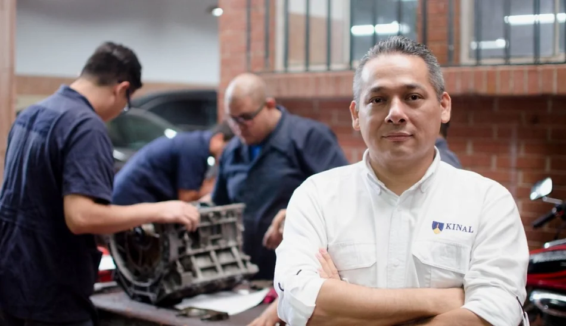
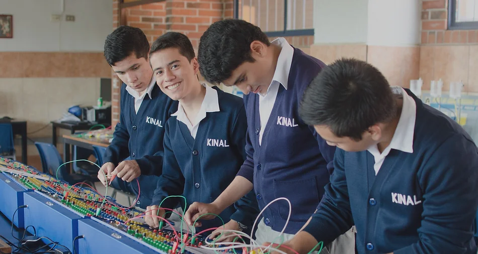
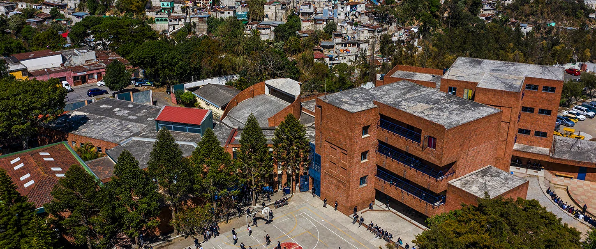
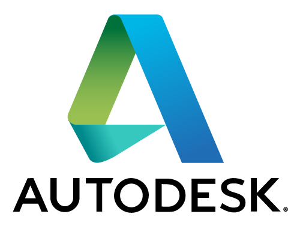

| Carreras Técnicas | Peritos Técnicos | Educacion Básica |
|---|---|---|
|

Las carreras técnicas mejor vistas en Guatemala donde tu puedes salir con una preparación profesional y puedas aprovechar tus habilidades al máximo. |

Carreras técnicas especializadas con una duración de 3 años donde puedas aprender el manejo de herramientas industriales a nivel profesional muy importante para el ámbito laboral. El titulo podrá darles ingreso a las mejores universidades del país. |

Fundación Kinal busca mejorar la educación en Guatemala por eso impartimos una calidad de educación que no se compara con otro establecimiento, nuestra educación es para todos los que quieran aprender lo mejor de nuestro establecimiento. |
El Trabajo bien hecho
Kinal es un establecimiento que le importa la educación guatemalteca que va dirigido a la especialización técnica donde los jóvenes y adultos suelen destacar, Kinal se enfoca a las partes de Guatemala que más necesiten la educación de calidad que nuestro establecimiento imparte diariamente sin altos costos beneficiando a la población Guatemalteca donde nuestra meta es la superación de cada alumno que recibe nuestros beneficios.
Kinal imparte capacitaciones para que mejores en tu negocio y así seas todo un profesional, junto con las organizaciones que nos ayudan y mejoran nuestro equipo puedes acercarte y sacar certificados verificados para los cursos de nuestra escuela Técnica Superior.
Jóvenes beneficiados
|
25K
|
1500
|
5K
|
31.5K
|
Colaboradores

|

|

|
 |
|
CONTÁCTANOS |

|
6 avenida 13-54 zona 7, Colonia |